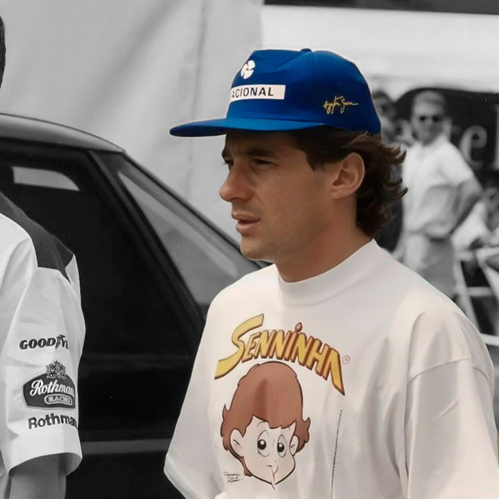
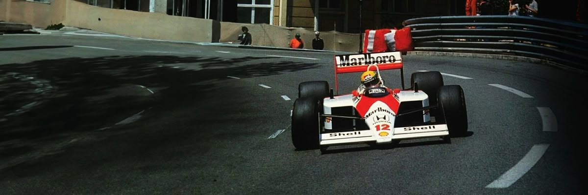
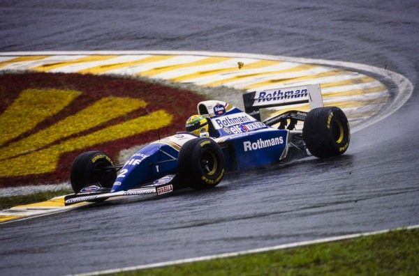

Ayrton Senna foi um dos maiores pilotos da história da Fórmula 1, conhecido por sua velocidade, talento e determinação nas pistas. Tricampeão mundial, Senna marcou gerações com pilotagens inesquecíveis, principalmente em corridas na chuva, onde demonstrava um controle impressionante do carro. Além do sucesso nas pistas, também ficou admirado por sua humildade, carisma e pelo impacto social que deixou no Brasil. Seu legado continua vivo no automobilismo, sendo símbolo de paixão, superação e excelência no esporte.


O capacete de Ayrton Senna se tornou um dos maiores símbolos da história da Fórmula 1. Com as cores verde, amarelo e azul representando a bandeira do Brasil, o design simples e marcante transmitia velocidade, coragem e identidade nacional. Mais do que um equipamento de corrida, o capacete virou um ícone do automobilismo, eternizado pelas ultrapassagens históricas, voltas lendárias e pela conexão única que Senna tinha com os fãs brasileiros. Até hoje, suas cores são reconhecidas no mundo inteiro como símbolo de talento, determinação e paixão pelas pistas.




